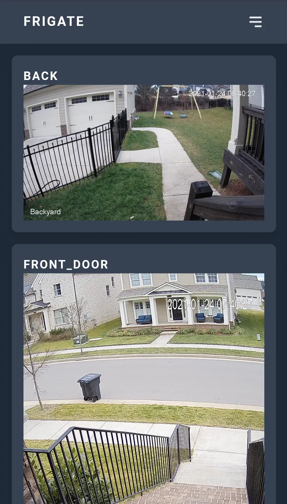
Frigate
让已有摄像头接入本地目标检测与录像系统。
当前显示第 1–24 条；使用筛选时会加载该分类的全部分页。

让已有摄像头接入本地目标检测与录像系统。
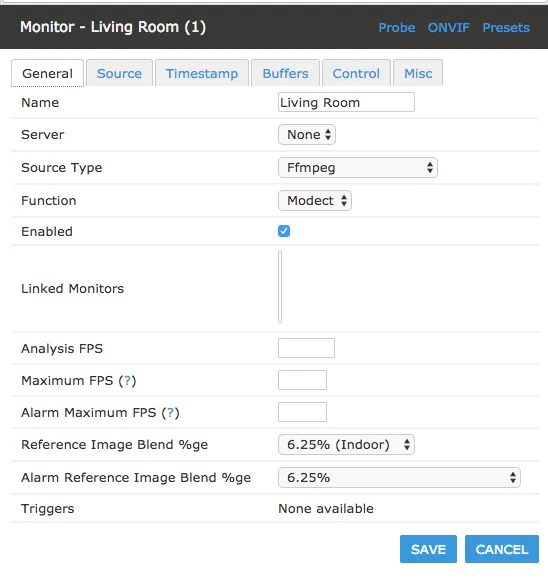
为部分旧摄像头提供本地视频流和扩展控制。
为部分 IP 摄像头替换开放固件，获得可自主控制的视频流。
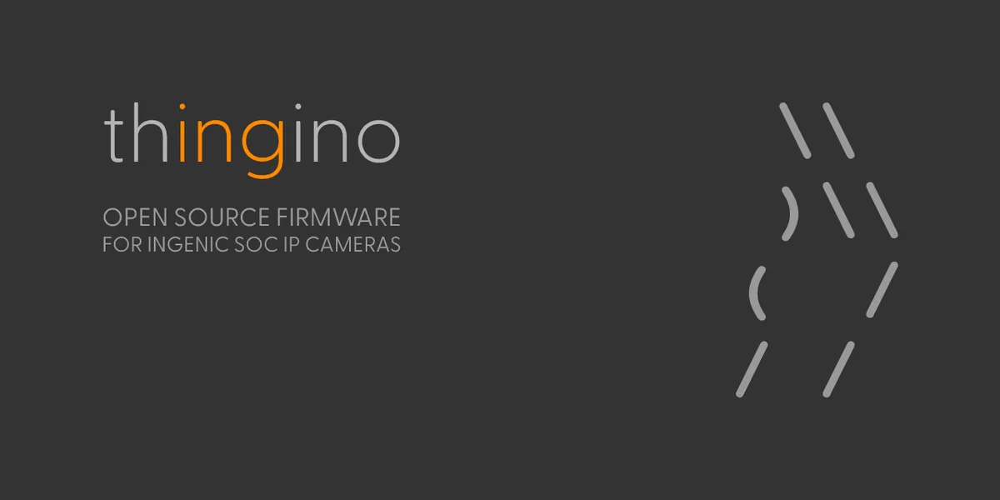
使用轻量开放固件延长受支持摄像头的本地使用寿命。
评估把闲置手机作为局域网摄像头。
评估把旧摄像头的视频流桥接到新的本地服务。
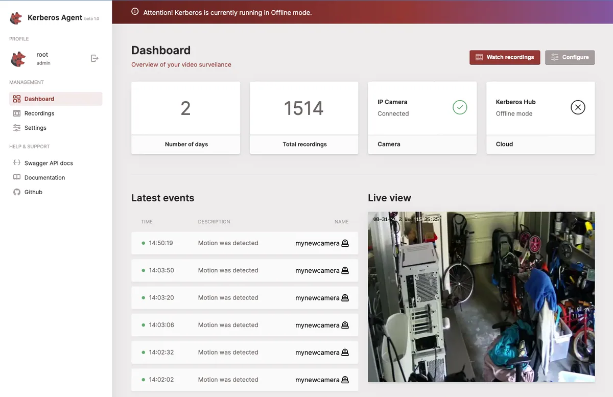
评估把旧摄像头纳入可扩展的视频监控节点。
调查让旧数码相机继续用于联机拍摄或自动采集。
为旧网络摄像头桥接、代理或录制实时视频流。
把旧摄像头用于本地运动检测。
给旧摄像头或采集主机增加网页监控界面。
把旧单板机和摄像头组合成局域网监控节点。
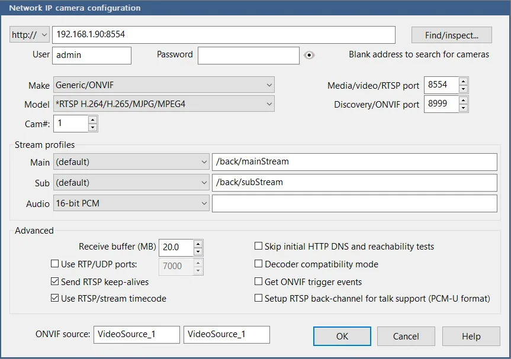
评估把既有 Reolink 摄像头接入 RTSP 消费端。
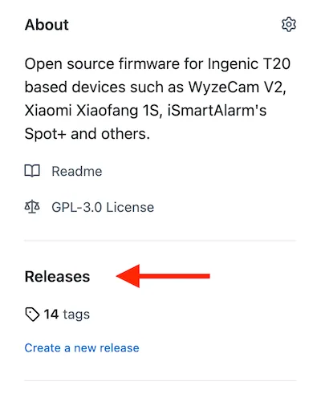
评估把列出的云摄像头迁移到开源固件。
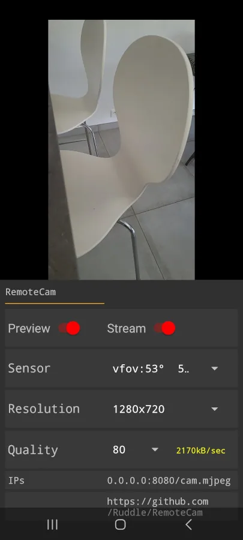
评估把旧 Android 手机用作桌面或直播摄像头。
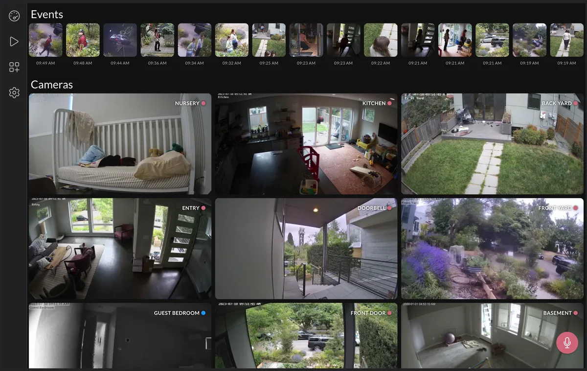
评估把现有摄像设备汇入统一的本地视频自动化层
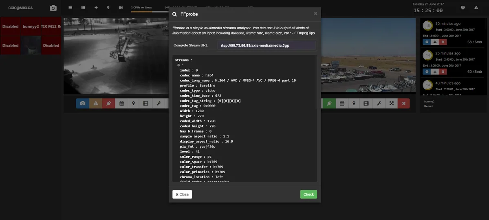
评估将旧摄像头接入集中视频管理。
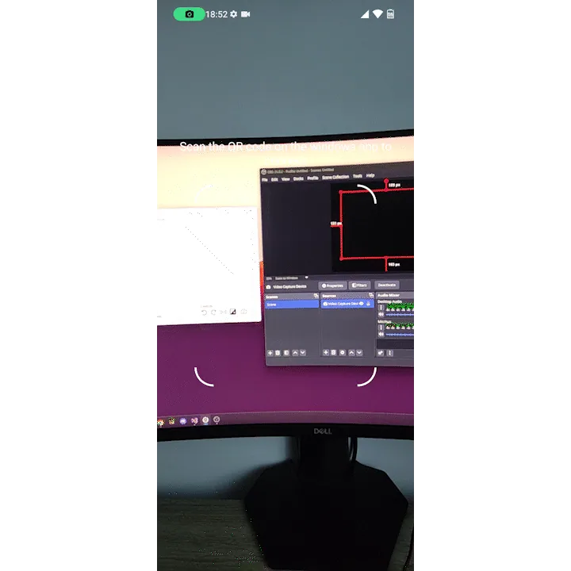
评估把旧 Android 手机复用为 Windows 摄像头。
调查既有 Wyze 摄像头的自定义入口。
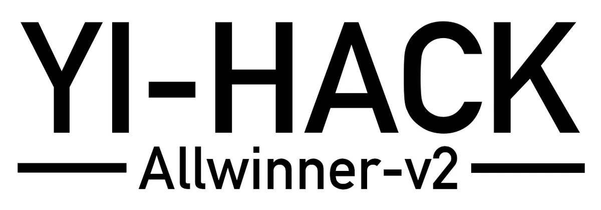
评估替换相应 Yi 摄像头的原厂固件。
评估替换相应 Yi 摄像头的原厂固件。
作者把旧 Samsung S5 作为摄像端，通过当时的第三方应用和账号在另一台手机查看宠物画面。
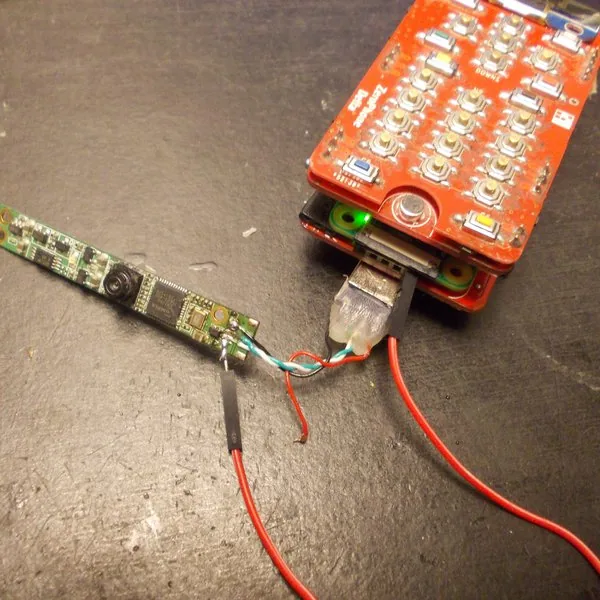
项目说明许多笔记本摄像头本质上是 USB 设备，并设计 FPC 转接方案，整理多款已识别模块。
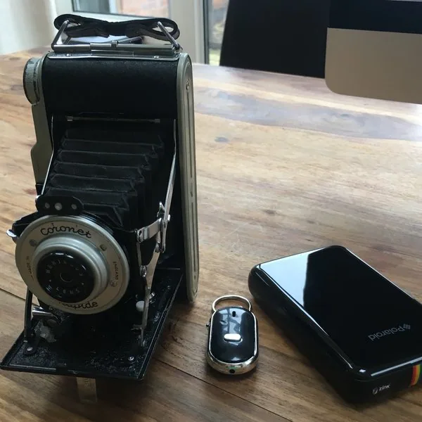
作者把 Pi 相机与定制 Buildroot 系统装入旧相机，保留快门操作，并提供 Wi-Fi 热点、实时预览和照片图库。
减少一个筛选条件，或换一个设备/型号词。